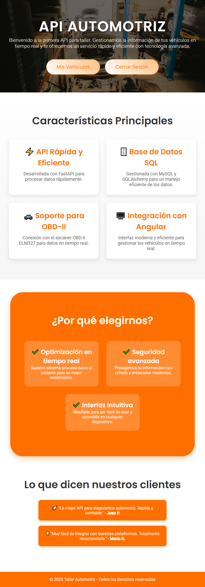

src/app/app.component.ts

Componente raíz principal de la aplicación Angular.
Este componente actúa como la entrada principal de la SPA (Single Page Application) y controla la navegación y visualización condicional de elementos en función del estado de autenticación del usuario.
Presenta una página de bienvenida con la descripción de la API automotriz cuando el usuario está en la página principal, mostrando botones para registrarse o iniciar sesión si no está autenticado, o bien opciones para acceder a la gestión de vehículos y cerrar sesión si está autenticado.
También incluye secciones informativas sobre las características principales de la API, beneficios y testimonios de clientes, todo dentro de un diseño moderno y accesible.
| selector | app-root |
| standalone | true |
| imports |
RouterModule
CommonModule
|
| styleUrls | ./app.component.css |
| templateUrl | ./app.component.html |
Properties |
Methods |
constructor(http: HttpClient, router: Router)
|
||||||||||||
|
Defined in src/app/app.component.ts:39
|
||||||||||||
|
Constructor del componente.
Parameters :
|
| cerrarSesion |
cerrarSesion()
|
|
Defined in src/app/app.component.ts:75
|
|
Cierra la sesión del usuario. Elimina el token de autenticación almacenado localmente y redirige a la página principal.
Returns :
void
|
| esPaginaPrincipal |
esPaginaPrincipal()
|
|
Defined in src/app/app.component.ts:55
|
|
Determina si la URL actual es la página principal. Example :
Returns :
boolean
|
| usuarioAutenticado |
usuarioAutenticado()
|
|
Defined in src/app/app.component.ts:66
|
|
Comprueba si el usuario está autenticado. Evalúa la presencia de un token de sesión almacenado en
Returns :
boolean
|
| description |
Type : string
|
Default value : 'Bienvenido a la primera API para taller. Gestionamos la información de tus vehículos en tiempo real y te ofrecemos un servicio rápido y eficiente con tecnología avanzada.'
|
|
Defined in src/app/app.component.ts:39
|
|
Descripción informativa que explica el propósito y ventajas de la API. Se muestra en la página principal justo debajo del título. |
| title |
Type : string
|
Default value : 'Api Automotriz'
|
|
Defined in src/app/app.component.ts:33
|
|
Título principal que representa el nombre de la aplicación. Se muestra en la cabecera de la página principal. |
import { Component } from '@angular/core';
import { HttpClient } from '@angular/common/http';
import { Router, RouterModule } from '@angular/router';
import { CommonModule } from '@angular/common';
/**
* 
* <br>
* Componente raíz principal de la aplicación Angular.
*
* Este componente actúa como la entrada principal de la SPA (Single Page Application) y controla la
* navegación y visualización condicional de elementos en función del estado de autenticación del usuario.
*
* Presenta una página de bienvenida con la descripción de la API automotriz cuando el usuario está en la página principal,
* mostrando botones para registrarse o iniciar sesión si no está autenticado, o bien opciones para acceder a
* la gestión de vehículos y cerrar sesión si está autenticado.
*
* También incluye secciones informativas sobre las características principales de la API, beneficios y
* testimonios de clientes, todo dentro de un diseño moderno y accesible.
*/
@Component({
selector: 'app-root',
standalone: true,
imports: [RouterModule, CommonModule],
templateUrl: './app.component.html',
styleUrls: ['./app.component.css']
})
export class AppComponent {
/**
* Título principal que representa el nombre de la aplicación.
* Se muestra en la cabecera de la página principal.
*/
title = 'Api Automotriz';
/**
* Descripción informativa que explica el propósito y ventajas de la API.
* Se muestra en la página principal justo debajo del título.
*/
description = 'Bienvenido a la primera API para taller. Gestionamos la información de tus vehículos en tiempo real y te ofrecemos un servicio rápido y eficiente con tecnología avanzada.';
/**
* Constructor del componente.
*
* @param http Cliente HTTP para realizar llamadas al backend (no utilizado directamente aquí, pero inyectado para posibles futuras funciones).
* @param router Servicio para gestionar la navegación y obtener la URL actual.
*/
constructor(private http: HttpClient, private router: Router) { }
/**
* Determina si la URL actual es la página principal.
*
* @returns `true` si la ruta actual es exactamente `'/'`, lo que indica que el usuario está en la landing page.
* `false` en caso contrario.
*/
esPaginaPrincipal(): boolean {
return this.router.url === '/';
}
/**
* Comprueba si el usuario está autenticado.
*
* Evalúa la presencia de un token de sesión almacenado en `localStorage`.
*
* @returns `true` si existe un token válido indicando sesión activa, `false` si no hay token.
*/
usuarioAutenticado(): boolean {
return !!localStorage.getItem('token');
}
/**
* Cierra la sesión del usuario.
*
* Elimina el token de autenticación almacenado localmente y redirige a la página principal.
*/
cerrarSesion(): void {
localStorage.removeItem('token');
this.router.navigate(['/']);
}
}
<ng-container *ngIf="esPaginaPrincipal()">
<div class="landing-container">
<header class="header">
<div class="overlay"></div>
<div class="content">
<div class="logo">
<h1>{{ title }}</h1>
</div>
<p class="description">{{ description }}</p>
<!-- Mostrar botones dependiendo del estado de sesión -->
<ng-container *ngIf="!usuarioAutenticado(); else loggedInButtons">
<button routerLink="/register" class="cta-button">Regístrate</button>
<button routerLink="/login" class="cta-button">Iniciar Sesión</button>
</ng-container>
<ng-template #loggedInButtons>
<button routerLink="/mis-vehiculos" class="cta-button">Mis Vehículos</button>
<button (click)="cerrarSesion()" class="cta-button">Cerrar Sesión</button>
</ng-template>
</div>
</header>
<section class="features">
<h2 class="section-title">Características Principales</h2>
<div class="feature-list">
<div class="feature">
<h3>⚡ API Rápida y Eficiente</h3>
<p>Desarrollada con FastAPI para procesar datos rápidamente.</p>
</div>
<div class="feature">
<h3>🗄️ Base de Datos SQL</h3>
<p>Gestionada con MySQL y SQLAlchemy para un manejo eficiente de los datos.</p>
</div>
<div class="feature">
<h3>🚗 Soporte para OBD-II</h3>
<p>Conexión con el escáner OBD-II ELM327 para datos en tiempo real.</p>
</div>
<div class="feature">
<h3>🖥️ Integración con Angular</h3>
<p>Interfaz moderna y eficiente para gestionar los vehículos en tiempo real.</p>
</div>
</div>
</section>
<section class="why-choose">
<h2>¿Por qué elegirnos?</h2>
<div class="benefits">
<div class="benefit">
<h3>✔️ Optimización en tiempo real</h3>
<p>Nuestro sistema procesa datos al instante para un mejor rendimiento.</p>
</div>
<div class="benefit">
<h3>✔️ Seguridad avanzada</h3>
<p>Protegemos tu información con cifrado y protocolos modernos.</p>
</div>
<div class="benefit">
<h3>✔️ Interfaz intuitiva</h3>
<p>Diseñada para ser fácil de usar y accesible en cualquier dispositivo.</p>
</div>
</div>
</section>
<section class="testimonials">
<h2>Lo que dicen nuestros clientes</h2>
<div class="testimonial">
<p>🚀 "La mejor API para diagnóstico automotriz. Rápida y confiable." - <strong>Juan P.</strong></p>
</div>
<div class="testimonial">
<p>💡 "Muy fácil de integrar con nuestras plataformas. Totalmente recomendada." - <strong>María G.</strong></p>
</div>
</section>
<footer class="footer">
<p>© 2025 Taller Automotriz - Todos los derechos reservados</p>
</footer>
</div>
</ng-container>
<!-- Carga la página correspondiente -->
<router-outlet></router-outlet>
./app.component.css
/* HEADER CON EFECTO HERO */
header {
position: relative;
background: url('https://images.unsplash.com/photo-1646807284302-170c9505b2e7?q=80&w=2070&auto=format&fit=crop&ixlib=rb-4.0.3&ixid=M3wxMjA3fDB8MHxwaG90by1wYWdlfHx8fGVufDB8fHx8fA%3D%3D') no-repeat center;
background-size: cover;
color: white;
text-align: center;
padding: 80px 20px;
height: 60vh;
width: 100%;
display: flex;
align-items: center;
justify-content: center;
}
header::before {
content: "";
position: absolute;
top: 0;
left: 0;
width: 100%;
height: 100%;
background: rgba(0, 0, 0, 0.6);
}
header .content {
position: relative;
z-index: 2;
}
.logo h1 {
font-size: 3.5rem;
font-weight: 700;
letter-spacing: 2px;
text-transform: uppercase;
text-shadow: 2px 2px 10px rgba(0, 0, 0, 0.5);
}
.description {
font-size: 1.2rem;
margin-bottom: 30px;
font-weight: 300;
}
/* BOTÓN CTA */
.cta-button {
background: linear-gradient(45deg, #ffffff, #ffbf80);
color: #ff6f00;
font-size: 1.2rem;
padding: 15px 40px;
border-radius: 50px;
box-shadow: 0px 5px 15px rgba(255, 111, 0, 0.4);
transition: transform 0.3s ease-in-out, box-shadow 0.3s ease-in-out;
margin: 10px;
}
.cta-button:last-child:hover {
background-color: #ff3333;
}
.cta-button:hover {
background: #ff6f00;
color: white;
transform: scale(1.1);
box-shadow: 0px 8px 20px rgba(255, 111, 0, 0.6);
}
/* SECCIÓN DE CARACTERÍSTICAS */
.features {
background: linear-gradient(180deg, #fff, #f5f5f5);
padding: 80px 20px;
text-align: center;
}
.features .section-title {
font-size: 2.5rem;
color: #333;
font-weight: 700;
margin-bottom: 40px;
}
.feature-list {
display: flex;
flex-wrap: wrap;
justify-content: center;
gap: 30px;
}
.feature {
background: white;
padding: 30px;
border-radius: 12px;
box-shadow: 0px 5px 15px rgba(0, 0, 0, 0.1);
flex: 1 1 calc(25% - 30px);
max-width: calc(25% - 30px);
transition: transform 0.3s ease-in-out;
}
.feature:hover {
transform: translateY(-10px);
}
.feature h3 {
font-size: 1.8rem;
color: #ff6f00;
font-weight: 600;
margin-bottom: 10px;
}
.feature p {
font-size: 1.1rem;
color: #666;
}
/* SECCIÓN "¿POR QUÉ ELEGIRNOS?" */
.why-choose {
background: #ff6f00;
color: white;
padding: 80px 20px;
text-align: center;
margin-top: 50px;
/* Añade margen para separarla de la sección anterior */
border-radius: 50px;
/* Redondea las esquinas */
width: 90%;
max-width: 1200px;
/* Para que no se vea demasiado ancha en pantallas grandes */
margin-left: auto;
margin-right: auto;
box-shadow: 0px 10px 20px rgba(255, 111, 0, 0.3);
/* Sombra para destacar más */
}
.why-choose h2 {
font-size: 2.5rem;
font-weight: 700;
margin-bottom: 30px;
}
/* Lista de beneficios */
.benefits {
display: flex;
flex-wrap: wrap;
justify-content: center;
gap: 30px;
padding: 20px;
}
.benefit {
background: rgba(255, 255, 255, 0.2);
padding: 25px;
border-radius: 15px;
width: 250px;
transition: transform 0.3s ease-in-out, background 0.3s ease-in-out;
}
.benefit:hover {
transform: scale(1.05);
background: rgba(255, 255, 255, 0.3);
}
.benefit h3 {
font-size: 1.5rem;
}
.benefit p {
font-size: 1rem;
}
/* TESTIMONIOS */
.testimonials {
padding: 80px 20px;
text-align: center;
}
.testimonials h2 {
font-size: 2.5rem;
color: #333;
font-weight: 700;
margin-bottom: 30px;
}
.testimonial {
background: #ff6f00;
color: white;
padding: 20px;
margin: 20px auto;
max-width: 500px;
border-radius: 10px;
box-shadow: 0px 5px 10px rgba(255, 111, 0, 0.3);
}
/* RESPONSIVIDAD */
@media (max-width: 1024px) {
.feature,
.benefit {
flex: 1 1 calc(50% - 30px);
max-width: calc(50% - 30px);
}
}
@media (max-width: 768px) {
header {
height: 50vh;
}
.logo h1 {
font-size: 2.6rem;
}
.cta-button {
padding: 12px 35px;
}
.feature-list,
.benefits {
flex-direction: column;
}
.feature,
.benefit {
flex: 1 1 100%;
max-width: 100%;
}
.why-choose {
width: 95%;
padding: 60px 20px;
border-radius: 30px;
/* Menos redondeo en pantallas pequeñas */
}
.benefits {
flex-direction: column;
align-items: center;
}
.benefit {
width: 100%;
max-width: 300px;
}
}
@media (max-width: 480px) {
.cta-button {
padding: 10px 30px;
}
}